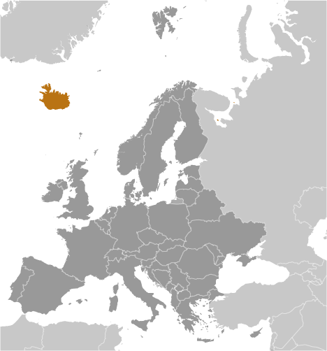
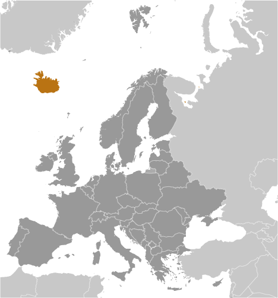

Europe :: ICELAND
Introduction :: ICELAND
-
Settled by Norwegian and Celtic (Scottish and Irish) immigrants during the late 9th and 10th centuries A.D., Iceland boasts the world's oldest functioning legislative assembly, the Althingi, established in 930. Independent for over 300 years, Iceland was subsequently ruled by Norway and Denmark. Fallout from the Askja volcano of 1875 devastated the Icelandic economy and caused widespread famine. Over the next quarter century, 20% of the island's population emigrated, mostly to Canada and the US. Denmark granted limited home rule in 1874 and complete independence in 1944. The second half of the 20th century saw substantial economic growth driven primarily by the fishing industry. The economy diversified greatly after the country joined the European Economic Area in 1994, but Iceland was especially hard hit by the global financial crisis in the years following 2008. The economy is now on an upward trajectory, fueled primarily by a tourism and construction boom. Literacy, longevity, and social cohesion are first rate by world standards.
Geography :: ICELAND
-
Northern Europe, island between the Greenland Sea and the North Atlantic Ocean, northwest of the United Kingdom65 00 N, 18 00 WArctic Regiontotal: 103,000 sq kmland: 100,250 sq kmwater: 2,750 sq kmcountry comparison to the world: 109slightly smaller than Pennsylvania; about the same size as Kentucky0 km4,970 kmterritorial sea: 12 nmexclusive economic zone: 200 nmcontinental shelf: 200 nm or to the edge of the continental margintemperate; moderated by North Atlantic Current; mild, windy winters; damp, cool summersmostly plateau interspersed with mountain peaks, icefields; coast deeply indented by bays and fiordsmean elevation: 557 melevation extremes: lowest point: Atlantic Ocean 0 mhighest point: Hvannadalshnukur 2,110 m (at Vatnajokull Glacier)fish, hydropower, geothermal power, diatomiteagricultural land: 18.7%arable land 1.2%; permanent crops 0%; permanent pasture 17.5%forest: 0.3%other: 81% (2011 est.)NAIceland is almost entirely urban with half of the population located in and around the capital of Reykjavik; smaller clusters are primarily found along the coast in the north and westearthquakes and volcanic activityvolcanism: Iceland, situated on top of a hotspot, experiences severe volcanic activity; Eyjafjallajokull (1,666 m) erupted in 2010, sending ash high into the atmosphere and seriously disrupting European air traffic; scientists continue to monitor nearby Katla (1,512 m), which has a high probability of eruption in the very near future, potentially disrupting air traffic; Grimsvoetn and Hekla are Iceland's most active volcanoes; other historically active volcanoes include Askja, Bardarbunga, Brennisteinsfjoll, Esjufjoll, Hengill, Krafla, Krisuvik, Kverkfjoll, Oraefajokull, Reykjanes, Torfajokull, and Vestmannaeyjarwater pollution from fertilizer runoff; inadequate wastewater treatmentparty to: Air Pollution, Air Pollution-Persistent Organic Pollutants, Biodiversity, Climate Change, Climate Change-Kyoto Protocol, Desertification, Endangered Species, Hazardous Wastes, Kyoto Protocol, Law of the Sea, Marine Dumping, Ozone Layer Protection, Ship Pollution, Transboundary Air Pollution, Wetlands, Whalingsigned, but not ratified: Environmental Modification, Marine Life Conservationstrategic location between Greenland and Europe; westernmost European country; Reykjavik is the northernmost national capital in the world; more land covered by glaciers than in all of continental Europe
People and Society :: ICELAND
-
339,747 (July 2017 est.)country comparison to the world: 178noun: Icelander(s)adjective: Icelandichomogeneous mixture of descendants of Norse and Celts 94%, population of foreign origin 6%Icelandic, English, Nordic languages, German widely spokenEvangelical Lutheran Church of Iceland (official) 69.9%, Roman Catholic 3.8%, Reykjavik Free Church 2.9%, Hafnarfjorour Free Church 2%, Asatru Association 1.1%, The Independent Congregation 1%, other religions 4% (includes Zuist and Pentecostal), none 6.1%, other or unspecified 9.2% (2017 est.)0-14 years: 20.4% (male 35,418/female 33,887)15-24 years: 13.5% (male 23,190/female 22,659)25-54 years: 39.88% (male 68,579/female 66,899)55-64 years: 11.81% (male 20,119/female 20,007)65 years and over: 14.42% (male 22,936/female 26,053) (2017 est.)total dependency ratio: 51.6youth dependency ratio: 30.8elderly dependency ratio: 20.8potential support ratio: 4.8 (2015 est.)total: 36.5 yearsmale: 35.9 yearsfemale: 37.1 years (2017 est.)country comparison to the world: 701.13% (2017 est.)country comparison to the world: 10613.7 births/1,000 population (2017 est.)country comparison to the world: 1416.4 deaths/1,000 population (2017 est.)country comparison to the world: 1484 migrant(s)/1,000 population (2017 est.)country comparison to the world: 29Iceland is almost entirely urban with half of the population located in and around the capital of Reykjavik; smaller clusters are primarily found along the coast in the north and westurban population: 94.3% of total population (2017)rate of urbanization: 1.1% annual rate of change (2015-20 est.)REYKJAVIK (capital) 184,000 (2014)at birth: 1.05 male(s)/female0-14 years: 1.05 male(s)/female15-24 years: 1.03 male(s)/female25-54 years: 1.02 male(s)/female55-64 years: 1.01 male(s)/female65 years and over: 0.88 male(s)/femaletotal population: 1.01 male(s)/female (2016 est.)27.4 years (2015 est.)3 deaths/100,000 live births (2015 est.)country comparison to the world: 183total: 2.1 deaths/1,000 live birthsmale: 2.2 deaths/1,000 live birthsfemale: 1.9 deaths/1,000 live births (2017 est.)country comparison to the world: 223total population: 83.1 yearsmale: 80.9 yearsfemale: 85.4 years (2017 est.)country comparison to the world: 62 children born/woman (2017 est.)country comparison to the world: 1208.9% of GDP (2014)country comparison to the world: 433.79 physicians/1,000 population (2015)3.18 beds/1,000 population (2014)improved:urban: 100% of populationrural: 100% of populationtotal: 100% of populationunimproved:urban: 0% of populationrural: 0% of populationtotal: 0% of population (2015 est.)improved:urban: 98.7% of populationrural: 100% of populationtotal: 98.8% of populationunimproved:urban: 1.3% of populationrural: 0% of populationtotal: 1.2% of population (2015 est.)NANANA21.9% (2016)country comparison to the world: 837.8% of GDP (2013)country comparison to the world: 14total: 20 yearsmale: 18 yearsfemale: 21 years (2013)total: 6.5%male: 6.7%female: 6.4% (2016 est.)country comparison to the world: 85
Government :: ICELAND
-
conventional long form: Republic of Icelandconventional short form: Icelandlocal long form: Lydveldid Islandlocal short form: Islandetymology: Floki VILGERDARSON, an early explorer of the island (9th century), applied the name "Land of Ice" after spotting a fjord full of drift ice to the north and spending a bitter winter on the island; he eventually settled on the island, however, after he saw how it greened up in the summer and that it was, in fact, habitableparliamentary republicname: Reykjavikgeographic coordinates: 64 09 N, 21 57 Wtime difference: UTC 0 (5 hours ahead of Washington, DC, during Standard Time)8 regions; Austurland, Hofudhborgarsvaedhi, Nordhurland Eystra, Nordhurland Vestra, Sudhurland, Sudhurnes, Vestfirdhir, Vesturland1 December 1918 (became a sovereign state under the Danish Crown); 17 June 1944 (from Denmark; birthday of Jon SIGURDSSON, leader of Iceland's 19th Century independence movement)Independence Day, 17 June (1944)history: several previous; latest ratified 16 June 1944, effective 17 June 1944 (at independence)amendments: proposed by the Althingi; passage requires approval by the Althingi and by the next elected Althingi, and confirmation by the president of the republic; proposed amendments to Article 62 of the constitution – that the Evangelical Lutheran Church shall be the state church of Iceland – also require passage by referendum; amended many times, last in 2013 (2016)civil law system influenced by the Danish modelhas not submitted an ICJ jurisdiction declaration; accepts ICCt jurisdictioncitizenship by birth: nocitizenship by descent only: at least one parent must be a citizen of Icelanddual citizenship recognized: yesresidency requirement for naturalization: 3 to 7 years18 years of age; universalchief of state: President Gudni Thorlacius JOHANNESSON (since 1 August 2016)head of government: Acting Prime Minister Bjarni BENEDIKTSSON (since 11 January 2017); Prime Minister BENEDIKTSSON resigned on 16 September 2017cabinet: Cabinet appointed by the prime ministerelections/appointments: president directly elected by simple majority popular vote for a 4-year term (no term limits); election last held on 25 June 2016 (next to be held in June 2020); following legislative elections, the leader of the majority party or majority coalition becomes prime ministerelection results: Gudni Thorlacius JOHANNESSON elected president; percent of vote - Gudni Thorlacius JOHANNESSON (IP) 39.1%, Halla TOMASDOTTIR (independent) 27.9%, Andri Snaer MAGNASON (independent) 14.3%, David ODDSSON (IP) 13.7%, Sturla JONSSON (Sturla Jonsson) 3.5%, invalid 1.5%description: unicameral Althingi or Parliament (63 seats; members directly elected in multi-seat constituencies by proportional representation vote to serve 4-year terms)elections: last held on 29 October 2016 (next to be held on 28 October 2017); note - an early election is being held because the governing coalition collapsedelection results: percent of vote by party - IP 29.0%, LGM 15.9%, PIP 14.5%, PP 11.5%, Reform 10.5%, BF 7.2%, SDA 5.7%, PP 3.5%; other 2.2%; seats by party - IP 21, LGM 10, PIP 10, PP 8, Reform 7, BF 4, SDA 3highest court(s): Supreme Court or Haestirettur (consists of 9 judges)judge selection and term of office: judges proposed by Ministry of Interior selection committee and appointed by the president; judges appointed for an indefinite periodsubordinate courts: 8 district courts; Labor CourtBright Future (Bjort framtid) or BF [Ottarr PROPPE]Independence Party (Sjalfstaedisflokkurinn) or IP [Bjarni BENEDIKTSSON]Left-Green Movement (Vinstrihreyfingin-graent frambod) or LGM [Katrin JAKOBSDOTTIR]Pirate Party (Piratar) or PIP [Birgitta JONSDOTTIR]Progressive Party (Framsoknarflokkurinn) or PP [Sigurdur Ingi JOHANNSSON]Reform (Vidreisn) or R [Benedict JOHANNSSON]Social Democratic Alliance (Samfylkingin) or SDA [Logi Mar EINARSSON]Sturla Jonsson (formerly Move Forward Party [Sturla JONSSON, chairman]Arctic Council, Australia Group, BIS, CBSS, CD, CE, EAPC, EBRD, EFTA, FAO, FATF, IAEA, IBRD, ICAO, ICC (national committees), ICCt, ICRM, IDA, IFAD, IFC, IFRCS, IHO, ILO, IMF, IMO, IMSO, Interpol, IOC, IOM, IPU, ISO, ITSO, ITU, ITUC (NGOs), MIGA, NATO, NC, NEA, NIB, NSG, OAS (observer), OECD, OPCW, OSCE, PCA, Schengen Convention, UN, UNCTAD, UNESCO, UPU, WCO, WHO, WIPO, WMO, WTOchief of mission: Ambassador Geir Hilmar HAARDE (since 23 February 2015)chancery: House of Sweden, 2900 K Street NWtelephone: [1] (202) 265-6653FAX: [1] (202) 265-6656consulate(s) general: New Yorkchief of mission: Ambassador (vacant); Charge d'Affaires Jill ESPOSITO (since 20 January 2017)embassy: Laufasvegur 21, 101 Reykjavikmailing address: US Department of State, 5640 Reykjavik Place, Washington, D.C. 20521-5640telephone: [354] 595-22-00FAX: [354] 562-9118blue with a red cross outlined in white extending to the edges of the flag; the vertical part of the cross is shifted to the hoist side in the style of the Dannebrog (Danish flag); the colors represent three of the elements that make up the island: red is for the island's volcanic fires, white recalls the snow and ice fields of the island, and blue is for the surrounding oceangyrfalcon; national colors: blue, white, redname: "Lofsongur" (Song of Praise)lyrics/music: Matthias JOCHUMSSON/Sveinbjorn SVEINBJORNSSONnote: adopted 1944; also known as "O, Gud vors lands" (O, God of Our Land), the anthem was originally written and performed in 1874
Economy :: ICELAND
-
Iceland's economy combines a capitalist structure and free-market principles with an extensive welfare system. Except for a brief period during the 2008 crisis, Iceland has achieved high growth, low unemployment, and a remarkably even distribution of income. The economy depends heavily on the fishing industry, which provides 40% of merchandise export earnings, more than 12% of GDP, and employs nearly 5% of the work force. It remains sensitive to declining fish stocks, as well as to fluctuations in world prices for its main exports: fish and fish products, aluminum, and ferrosilicon. Since 2010, tourism has become the main pillar of Icelandic economic growth, with the number of tourists reaching 4.5 times the Icelandic population in 2016.Iceland's economy has been diversifying into manufacturing and service industries in the last decade, particularly within the fields of tourism, software production, and biotechnology. In fall 2013, the Icelandic Government approved a joint application by Icelandic, Chinese, and Norwegian energy firms to conduct oil exploration off Iceland’s northeast coast, although no exploration has yet taken place. Abundant geothermal and hydropower sources have attracted substantial foreign investment in the aluminum sector, boosted economic growth, and sparked some interest from high-tech firms looking to establish data centers using cheap green energy, although the financial crisis has put several investment projects on hold.Following the privatization of the banking sector in the early 2000s, domestic banks expanded aggressively in foreign markets, and consumers and businesses borrowed heavily in foreign currencies. Worsening global financial conditions throughout 2008 resulted in a sharp depreciation of the krona vis-a-vis other major currencies. The foreign exposure of Icelandic banks, whose loans and other assets totaled more than 10 times the country's GDP, became unsustainable. Iceland's three largest banks collapsed in late 2008. The country secured over $10 billion in loans from the IMF and other countries to stabilize its currency and financial sector, and to back government guarantees for foreign deposits in Icelandic banks. GDP fell 6.8% in 2009, and unemployment peaked at 9.4% in February 2009. Three new banks were established to take over the domestic assets of the collapsed banks. Two of them have majority ownership by the state, which intends to re-privatize them.Since the collapse of Iceland's financial sector, government economic priorities have included stabilizing the krona, implementing capital controls, reducing Iceland's high budget deficit, containing inflation, addressing high household debt, restructuring the financial sector, and diversifying the economy. Capital controls were finally lifted in March 2017, but some financial protections (e.g., reserve requirements for specified investments connected to new inflows of foreign currency) remain in place. Iceland’s financial woes prompted an initial increase in public support to join the EU and the euro zone, with accession negotiations beginning in July 2010, but negotiations were suspended under the center-right government that took power in 2013. The current ruling coalition does not intend to restart accession talks, but has signaled that it would allow a vote on the question of EU membership, if a bill came before parliament near the end of the current parliamentary term. Most macroeconomic indicators and employment have rebounded to pre-crisis levels, driven primarily by the unprecedented growth in tourism – averaging over 20% annually – following the well-publicized volcanic eruption in 2010.$16.52 billion (2016 est.)$15.21 billion (2015 est.)$14.46 billion (2014 est.)note: data are in 2016 dollarscountry comparison to the world: 151$20.05 billion (2016 est.)7.2% (2016 est.)4.1% (2015 est.)1.9% (2014 est.)country comparison to the world: 7$49,200 (2016 est.)$46,300 (2015 est.)$45,000 (2014 est.)note: data are in 2016 dollarscountry comparison to the world: 2829.3% of GDP (2016 est.)24.5% of GDP (2015 est.)21.3% of GDP (2014 est.)country comparison to the world: 26household consumption: 49%government consumption: 23.1%investment in fixed capital: 21.2%investment in inventories: 0.1%exports of goods and services: 49.1%imports of goods and services: -42.5% (2016 est.)agriculture: 5.8%industry: 20.2%services: 74% (2016 est.)potatoes, carrots, green vegetables, tomatoes, cucumbers; mutton, chicken, pork, beef, dairy products; fishtourism, fish processing; aluminum smelting;; geothermal power, hydropower; medical/pharmaceutical products2% (2016 est.)country comparison to the world: 110196,500 (2016 est.)country comparison to the world: 173agriculture: 4.8%industry: 22.2%services: 73% (2008)3% (2016 est.)4% (2015 est.)country comparison to the world: 29NA%note: 332,100 families (2011 est.)lowest 10%: NA%highest 10%: NA%28 (2006)25 (2005)country comparison to the world: 135revenues: $11.71 billionexpenditures: $8.264 billion (2016 est.)58.4% of GDP (2016 est.)country comparison to the world: 917.2% of GDP (2016 est.)country comparison to the world: 254.5% of GDP (2016 est.)68.1% of GDP (2015 est.)country comparison to the world: 88calendar year1.7% (2016 est.)1.6% (2015 est.)country comparison to the world: 1145.4% (31 January 2012)5.75% (31 December 2010)country comparison to the world: 778.24% (31 December 2016 est.)7.61% (31 December 2015 est.)country comparison to the world: 103$4.251 billion (31 December 2016 est.)$3.314 billion (31 December 2015 est.)country comparison to the world: 108$8.693 billion (31 December 2015 est.)$7.471 billion (31 December 2015 est.)country comparison to the world: 107$21.18 billion (31 December 2016 est.)$18.43 billion (31 December 2015 est.)country comparison to the world: 86$2.825 billion (31 December 2012 est.)$2.021 billion (31 December 2011 est.)$1.996 billion (31 December 2010 est.)country comparison to the world: 96$1.589 billion (2016 est.)$918 million (2015 est.)country comparison to the world: 37$4.483 billion (2016 est.)$4.655 billion (2015 est.)country comparison to the world: 108fish and fish products (42%), aluminum (38%), agricultural products, medicinal and medical products, ferro-silicon (2015)Netherlands 25.4%, UK 11.3%, Spain 10.5%, US 7.8%, Germany 7%, France 6.7%, Norway 4.2% (2016)$5.315 billion (2016 est.)$4.926 billion (2015 est.)country comparison to the world: 120machinery and equipment, petroleum products, foodstuffs, textilesGermany 10.1%, US 10%, Norway 9.1%, Netherlands 7.5%, China 7.4%, Denmark 6.1%, UK 5.8% (2016)$7.226 billion (31 December 2016 est.)$5.041 billion (31 December 2015 est.)country comparison to the world: 81$25.02 billion (31 December 2016 est.)$30.25 billion (31 December 2015 est.)country comparison to the world: 85$13.89 billion (31 December 2016 est.)$16.26 billion (31 December 2015 est.)country comparison to the world: 90$17.64 billion (31 December 2016 est.)$16.47 billion (31 December 2015 est.)country comparison to the world: 54Icelandic kronur (ISK) per US dollar -129.3 (2016 est.)131.92 (2015 est.)131.92 (2014 est.)116.77 (2013 est.)125.08 (2012 est.)
Energy :: ICELAND
-
electrification - total population: 100% (2016)18.56 billion kWh (2015 est.)country comparison to the world: 7817.98 billion kWh (2015 est.)country comparison to the world: 730 kWh (2016 est.)country comparison to the world: 1490 kWh (2016 est.)country comparison to the world: 1612.772 million kW (2015 est.)country comparison to the world: 1014.2% of total installed capacity (2015 est.)country comparison to the world: 2060% of total installed capacity (2015 est.)country comparison to the world: 11071.7% of total installed capacity (2015 est.)country comparison to the world: 1824.1% of total installed capacity (2015 est.)country comparison to the world: 240 bbl/day (2016 est.)country comparison to the world: 1500 bbl/day (2016 est.)country comparison to the world: 1390 bbl/day (2016 est.)country comparison to the world: 1420 bbl (1 January 2017 es)country comparison to the world: 1490 bbl/day (2016 est.)country comparison to the world: 15819,800 bbl/day (2016 est.)country comparison to the world: 1392,845 bbl/day (2016 est.)country comparison to the world: 10319,530 bbl/day (2016 est.)country comparison to the world: 1190 cu m (2014 est.)country comparison to the world: 1500 cu m (2014 est.)country comparison to the world: 1940 cu m (2014 est.)country comparison to the world: 1220 cu m (2014 est.)country comparison to the world: 1390 cu m (1 January 2014 es)country comparison to the world: 1533.3 million Mt (2013 est.)country comparison to the world: 141
Communications :: ICELAND
-
total subscriptions: 164,566subscriptions per 100 inhabitants: 49 (July 2016 est.)country comparison to the world: 131total: 401,613subscriptions per 100 inhabitants: 120 (July 2016 est.)country comparison to the world: 175general assessment: telecommunications infrastructure is modern and fully digitized, with satellite-earth stations, fiber-optic cables, and an extensive broadband networkdomestic: liberalization of the telecommunications sector beginning in the late 1990s has led to increased competition especially in the mobile services segment of the marketinternational: country code - 354; the CANTAT-3 and FARICE-1 submarine cable systems provide connectivity to Canada, the Faroe Islands, UK, Denmark, and Germany; a planned new section of the Hibernia-Atlantic submarine cable will provide additional connectivity to Canada, US, and Ireland; satellite earth stations - 2 Intelsat (Atlantic Ocean), 1 Inmarsat (Atlantic and Indian Ocean regions); note - Iceland shares the Inmarsat earth station with the other Nordic countries (Denmark, Finland, Norway, and Sweden) (2015)state-owned public TV broadcaster operates 1 TV channel nationally; several privately owned TV stations broadcast nationally and roughly another half-dozen operate locally; about one-half the households utilize multi-channel cable or satellite TV services; state-owned public radio broadcaster operates 2 national networks and 4 regional stations; 2 privately owned radio stations operate nationally and another 15 provide more limited coverage (2007).istotal: 329,967percent of population: 98.2% (July 2016 est.)country comparison to the world: 141
Transportation :: ICELAND
-
number of registered air carriers: 5inventory of registered aircraft operated by air carriers: 43annual passenger traffic on registered air carriers: 3,413,950annual freight traffic on registered air carriers: 102,356,809 mt-km (2015)TF (2016)96 (2013)country comparison to the world: 60total: 7over 3,047 m: 11,524 to 2,437 m: 3914 to 1,523 m: 3 (2017)total: 891,524 to 2,437 m: 3914 to 1,523 m: 26under 914 m: 60 (2013)total: 12,890 kmpaved/oiled gravel: 4,782 km (excludes urban roads)unpaved: 8,108 km (2012)country comparison to the world: 127total: 2by type: passenger/cargo 2registered in other countries: 19 (Antigua and Barbuda 10, Belize 1, Faroe Islands 4, Finland 1, Gibraltar 1, Norway 2) (2010)country comparison to the world: 142major seaport(s): Grundartangi, Hafnarfjordur, Reykjavik
Military and Security :: ICELAND
-
0.1% of GDP (2016)0.13% of GDP (2012)0.14% of GDP (2011)0.13% of GDP (2010)country comparison to the world: 131no regular military forces; Icelandic National Police; Icelandic Coast Guard (2016)Iceland is the only NATO member that has no standing military force; all US military forces in Iceland were withdrawn as of October 2006; defense of Iceland remains a NATO commitment and NATO maintains an air policing presence in Icelandic airspace; Iceland participates in international peacekeeping missions with the civilian-manned Icelandic Crisis Response Unit (ICRU)
Transnational Issues :: ICELAND
-
Iceland, the UK, and Ireland dispute Denmark's claim that the Faroe Islands' continental shelf extends beyond 200 nm; the European Free Trade Association Surveillance Authority filed a suit against Iceland, claiming the country violated the Agreement on the European Economic Area in failing to pay minimum compensation to Icesave depositorsstateless persons: 131 (2016)